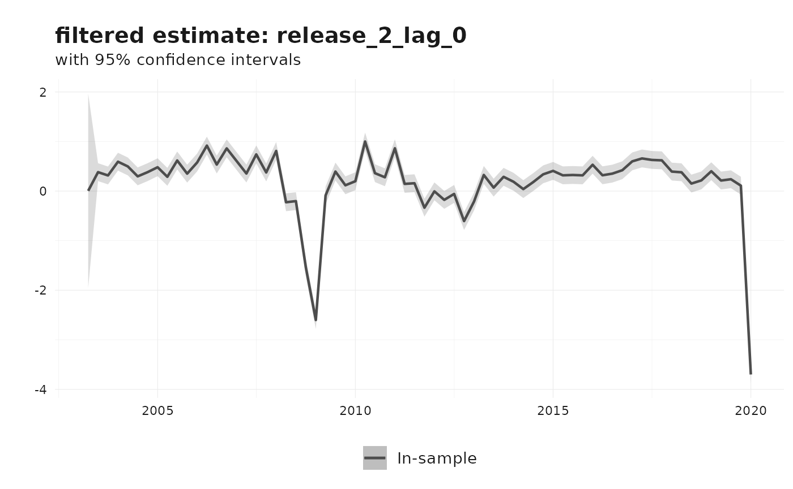

Nowcasting revisions using the generalized Kishor-Koenig family
Source:vignettes/nowcasting-revisions-kk.Rmd
nowcasting-revisions-kk.RmdThis vignette describes the generalized Kishor-Koenig (KK) revision
model and its nested variants as implemented in
reviser::kk_nowcast(). The exposition uses the same
Durbin-Koopman state-space notation that appears throughout the package
documentation: observation matrices are denoted by \(Z\), transition matrices by \(T\), shock-loading matrices by \(R\), and disturbance covariance matrices by
\(H\) and \(Q\) (Durbin and Koopman
2012).
The motivation is straightforward. Early releases of macroeconomic series are often revised several times before they settle near a stable value. Rather than ignoring that revision process, the KK family models the vector of releases directly and uses the Kalman filter to infer the latent efficient estimate.
Revision system
Suppose that an efficient estimate becomes available after \(e\) revisions. Let \(y_t^j\) denote the \(j\)-th release for reference period \(t\), where \(j = 0, \dots, e\). Following Strohsal and Wolf (2020), stack the efficient estimates and the observed real-time releases as
\[ z_t = \begin{bmatrix} y_{t-e}^{e} \\ y_{t-e+1}^{e} \\ \vdots \\ y_t^{e} \end{bmatrix}, \qquad y_t = \begin{bmatrix} y_{t-e}^{e} \\ y_{t-e+1}^{e-1} \\ \vdots \\ y_t^{0} \end{bmatrix}. \]
The generalized KK model is
\[ z_t = F z_{t-1} + \nu_t, \qquad \nu_t \sim N(0, V), \]
\[ y_t = (I - G) F y_{t-1} + G z_t + \epsilon_t, \qquad \epsilon_t \sim N(0, W). \]
The companion-form transition matrix is
\[ F = \begin{bmatrix} 0 & 1 & 0 & \cdots & 0 \\ 0 & 0 & 1 & \cdots & 0 \\ \vdots & \vdots & \vdots & \ddots & \vdots \\ 0 & 0 & 0 & \cdots & 1 \\ 0 & 0 & 0 & \cdots & F_0 \end{bmatrix}, \]
and the gain matrix is
\[ G = \begin{bmatrix} 1 & 0 & \cdots & 0 \\ G_{e-1,e} & G_{e-1,e-1} & \cdots & G_{e-1,0} \\ G_{e-2,e} & G_{e-2,e-1} & \cdots & G_{e-2,0} \\ \vdots & \vdots & \ddots & \vdots \\ G_{0,e} & G_{0,e-1} & \cdots & G_{0,0} \end{bmatrix}. \]
Intuitively, \(F\) governs the dynamics of the efficient estimate, while \(G\) controls how quickly incoming releases absorb new information. The covariance matrices \(V\) and \(W\) describe uncertainty in the latent efficient estimate and the published releases, respectively.
Nested models
The generalized KK setup nests two useful special cases.
- The Classical measurement-error model is obtained by setting \(G = I\). In that case, published data are noisy measurements of the latent efficient estimate, with no revision persistence beyond the state dynamics.
- The Howrey model (Howrey 1978) allows revision persistence but restricts the gain matrix by imposing \(G_{e-i,0} = 0\) for \(i = 1, \dots, e-1\) and \(G_{0,0} = 1\).
The model argument in kk_nowcast() selects
among these specifications: "KK", "Howrey",
and "Classical".
Durbin-Koopman state-space form
To run filtering and smoothing, reviser casts the KK
system into the standard time-invariant state-space form
\[ y_t = Z \alpha_t + \varepsilon_t, \qquad \varepsilon_t \sim N(0, H), \]
\[ \alpha_{t+1} = T \alpha_t + R \eta_t, \qquad \eta_t \sim N(0, Q). \]
Define the augmented state as
\[ \alpha_t = \begin{bmatrix} z_t \\ r_t \end{bmatrix}, \qquad r_t = y_t - z_t. \]
With this choice of state vector, the implementation in
kk_to_ss() uses
\[ Z = \begin{bmatrix} I & I \end{bmatrix}, \qquad T = \begin{bmatrix} F & 0 \\ 0 & (I - G) F \end{bmatrix}, \qquad R = I. \]
The observation disturbance is set to zero, so \(H = 0\). All uncertainty is collected in the state disturbance covariance matrix
\[ Q = \begin{bmatrix} V & -V (I - G)' \\ -(I - G) V & W + (I - G) V (I - G)' \end{bmatrix}. \]
This is exactly the Durbin-Koopman representation used internally by
reviser: the Kalman filter and smoother operate on \((Z, T, R, H, Q)\), while the KK-specific
parameters \((F, G, V, W)\) remain the
economically interpretable layer.
Estimation in reviser
kk_nowcast() supports three estimators.
-
method = "SUR"estimates the original revision equations jointly by seemingly unrelated regression usingsystemfit::nlsystemfit(). -
method = "OLS"estimates the equations one by one. This is fast, but the cross-equation restrictions are not fully efficient. -
method = "MLE"estimates the state-space model by maximum likelihood using the Kalman filter.
For applied work, the MLE route is usually the most flexible because it supports information criteria, Hessian- or QML-based standard errors, and filtered or smoothed states directly from the state-space model.
Example: Euro Area GDP revisions
We illustrate the workflow with Euro Area GDP growth from
reviser::gdp. We first identify an efficient release among
the first 15 vintages, then estimate the full KK model.
library(reviser)
library(dplyr)
library(tidyr)
library(tsbox)
gdp <- reviser::gdp |>
tsbox::ts_pc() |>
dplyr::filter(
id == "EA",
time >= min(pub_date),
time <= as.Date("2020-01-01")
) |>
tidyr::drop_na()
df <- get_nth_release(gdp, n = 0:14)
final_release <- get_nth_release(gdp, n = 15)
efficient_release <- load_or_build_vignette_result(
"nowcasting-revisions-kk-efficient-release.rds",
function() get_first_efficient_release(df, final_release)
)
summary(efficient_release)
#> Efficient release: 2
#>
#> Model summary:
#>
#> Call:
#> stats::lm(formula = formula, data = df_wide)
#>
#> Residuals:
#> Min 1Q Median 3Q Max
#> -0.34873 -0.08185 -0.00706 0.10475 0.31533
#>
#> Coefficients:
#> Estimate Std. Error t value Pr(>|t|)
#> (Intercept) 0.03276 0.01775 1.846 0.0692 .
#> release_2 1.01446 0.02440 41.577 <2e-16 ***
#> ---
#> Signif. codes: 0 '***' 0.001 '**' 0.01 '*' 0.05 '.' 0.1 ' ' 1
#>
#> Residual standard error: 0.1428 on 68 degrees of freedom
#> Multiple R-squared: 0.9622, Adjusted R-squared: 0.9616
#> F-statistic: 1729 on 1 and 68 DF, p-value: < 2.2e-16
#>
#>
#> Test summary:
#> Linear hypothesis test
#>
#> Hypothesis:
#> (Intercept) = 0
#> release_2 = 1
#>
#> Model 1: restricted model
#> Model 2: final ~ release_2
#>
#> Note: Coefficient covariance matrix supplied.
#>
#> Res.Df Df F Pr(>F)
#> 1 70
#> 2 68 2 2.743 0.07151 .
#> ---
#> Signif. codes: 0 '***' 0.001 '**' 0.01 '*' 0.05 '.' 0.1 ' ' 1
data_kk <- efficient_release$data
e <- efficient_release$eThe selected value of e tells us how many revision
rounds are needed before a release is statistically close to the final
benchmark.
fit_kk <- load_or_build_vignette_result(
"nowcasting-revisions-kk-fit.rds",
function() {
kk_nowcast(
df = data_kk,
e = e,
model = "KK",
method = "MLE",
solver_options = list(
method = "L-BFGS-B",
maxiter = 100,
se_method = "hessian"
)
)
}
)
summary(fit_kk)
#>
#> === Kishor-Koenig Model ===
#>
#> Specification: Kishor-Koenig
#> Estimation method: MLE
#> Convergence: Success
#> Log-likelihood: 125.7
#> AIC: -231.41
#> BIC: -198.23
#>
#> Parameter Estimates:
#> Parameter Estimate Std.Error
#> F0 0.633 0.131
#> G0_0 0.950 0.031
#> G0_1 -0.037 0.152
#> G0_2 -0.181 0.220
#> G1_0 -0.009 0.011
#> G1_1 0.594 0.061
#> G1_2 0.194 0.092
#> v0 0.380 0.068
#> eps0 0.008 0.001
#> eps1 0.001 0.000A fitted model is an S3 object inheriting from
revision_model, so it responds to the extractor generics
you would use on any other model object rather than requiring you to
index into it. coef() returns the estimated transition
coefficient \(F_0\), the gain-matrix
elements \(G_{i,j}\), and the state and
observation variances as a named vector; vcov() returns
their covariance matrix, and summary() shows estimates and
standard errors together.
coef(fit_kk)
#> F0 G0_0 G0_1 G0_2 G1_0 G1_1
#> 0.632929567 0.950077489 -0.036668743 -0.180770257 -0.008917958 0.594485408
#> G1_2 v0 eps0 eps1
#> 0.194030069 0.379883655 0.007785842 0.001397107Fit criteria are reached the same way, and reproduce the values
printed by summary().
logLik(fit_kk)
#> 'log Lik.' 125.7047 (df=10)
AIC(fit_kk)
#> [1] -231.4095
BIC(fit_kk)
#> [1] -198.2283
nobs(fit_kk)
#> [1] 204The states() accessor returns filtered and smoothed
estimates of the latent state vector in tidy format.
states(fit_kk, filter = "smoothed") |>
dplyr::slice_tail(n = 8)
#> # A tibble: 8 × 7
#> time state estimate lower upper filter sample
#> <date> <chr> <dbl> <dbl> <dbl> <chr> <chr>
#> 1 2018-04-01 release_2_lag_2 0.654 0.652 0.656 smoothed in_sample
#> 2 2018-07-01 release_2_lag_2 0.370 0.368 0.372 smoothed in_sample
#> 3 2018-10-01 release_2_lag_2 0.414 0.412 0.416 smoothed in_sample
#> 4 2019-01-01 release_2_lag_2 0.136 0.134 0.138 smoothed in_sample
#> 5 2019-04-01 release_2_lag_2 0.307 0.305 0.309 smoothed in_sample
#> 6 2019-07-01 release_2_lag_2 0.441 0.439 0.443 smoothed in_sample
#> 7 2019-10-01 release_2_lag_2 0.147 0.146 0.149 smoothed in_sample
#> 8 2020-01-01 release_2_lag_2 0.299 0.297 0.301 smoothed in_sampleThe default plot method shows the filtered estimate of the efficient release and its confidence interval.
plot(fit_kk)
Other KK-family specifications
The same data can be estimated under the nested Howrey and Classical restrictions.
fit_howrey <- kk_nowcast(
df = data_kk,
e = e,
model = "Howrey",
method = "MLE"
)
fit_classical <- kk_nowcast(
df = data_kk,
e = e,
model = "Classical",
method = "MLE"
)Those alternatives are useful when the unrestricted gain matrix of the full KK model is too parameter rich for the available sample.